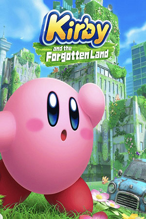
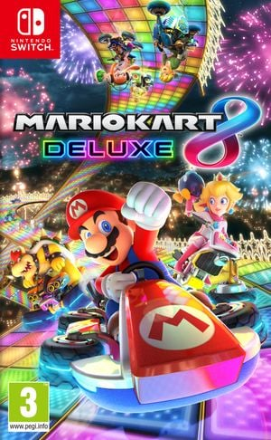
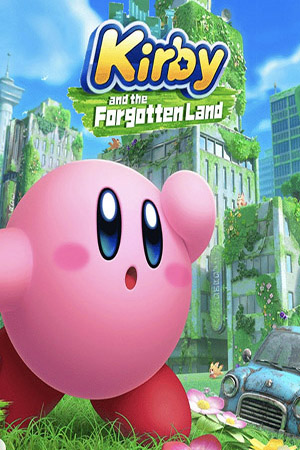
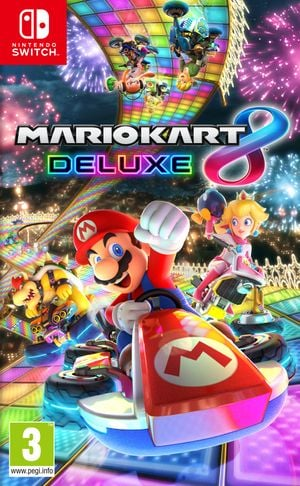

l'histoire de Kirby
Créé par Masahiko Sakurai en__, le célèbre personnage Kirby vue le jour. Sa première apparition fut dans le jeu Kirby’s dream land et fut le héros principal de l’anime Kirby right back. Saviez-vous que Kirby tient son nom d’un certain avocat nommé John Kirby? Ce dernier a défendu Nintendo dans un procès extrêmement médiatisé (1982-1986). Universal Studio accusait Nintendo d’usurper King Kong avec le personnage Donkey Gong. En réponse à cela, Nintendo remporta le procès. John Kirby fut considérer un héros et rendu hommage par Masahiro en nommant ce petit personnage rose Kirby.
La mission ultime de Kirby est d’empêcher des ennemis de prendre contrôle de sa planète natal Popstar, une planète ayant la forme d’une étoile. Kirby doit confronter plusieurs adversaires, tels que Roi Dadidou, Meta Knight et bien d’autres.

 


